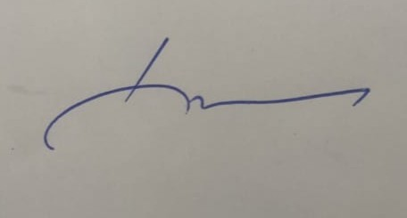

Founder's Message
When I founded Malar brand back in 2018, my goal was clear — to create a healthcare institution that not only treats illness but also educates and empowers patients to take charge of their health and well-being.
As the need for advanced and integrated care grew, I was inspired to expand this vision and hence, this journey evolved into the creation of Malar Hospital. A place where advanced facilities & multi-specialty care come together under one roof, ensuring every patient receives seamless, coordinated, and comprehensive care.
Built on the pillars of quality, teamwork, depth of care, and trust, Malar Hospital is more than just a place for treatment. It’s a centre of healing where every patient is heard, every life is valued, and every effort is made to deliver the best possible outcome.
We remain committed to guiding patients not just through recovery, but through awareness, prevention, and lifelong well-being.
Warm regards,

Dr. B. Kathiravan
Senior Consultant, Department of General & Laparoscopic Surgery
Founder & Managing Director
Malar Hospital